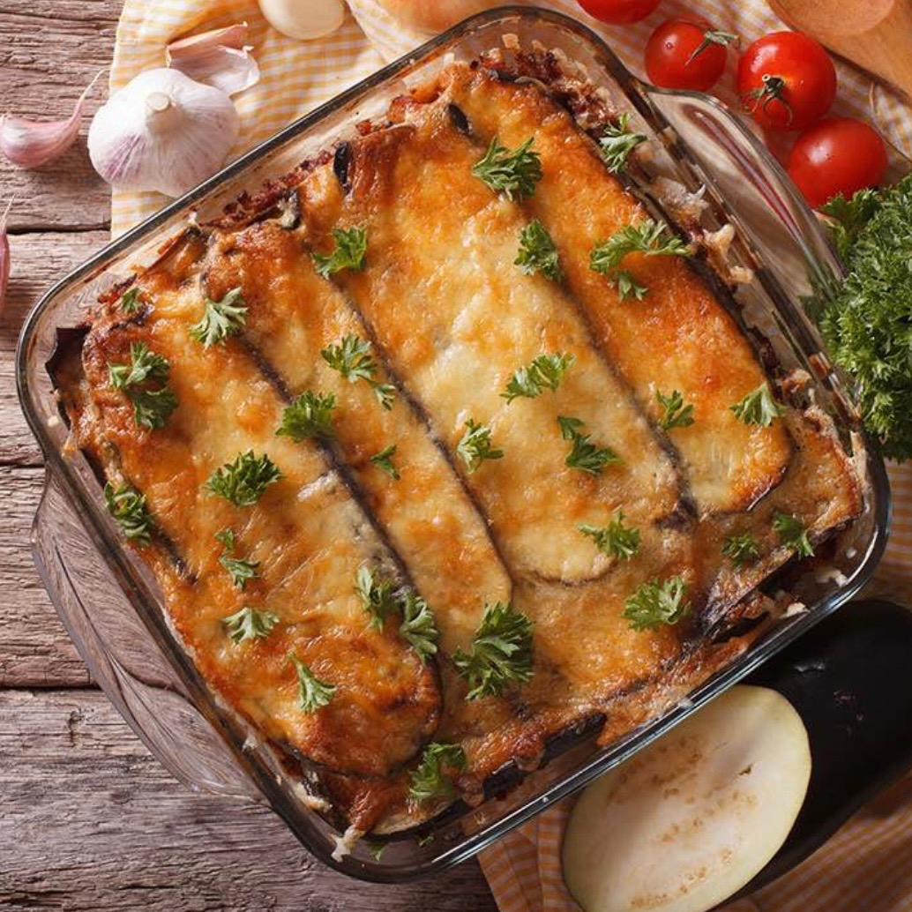
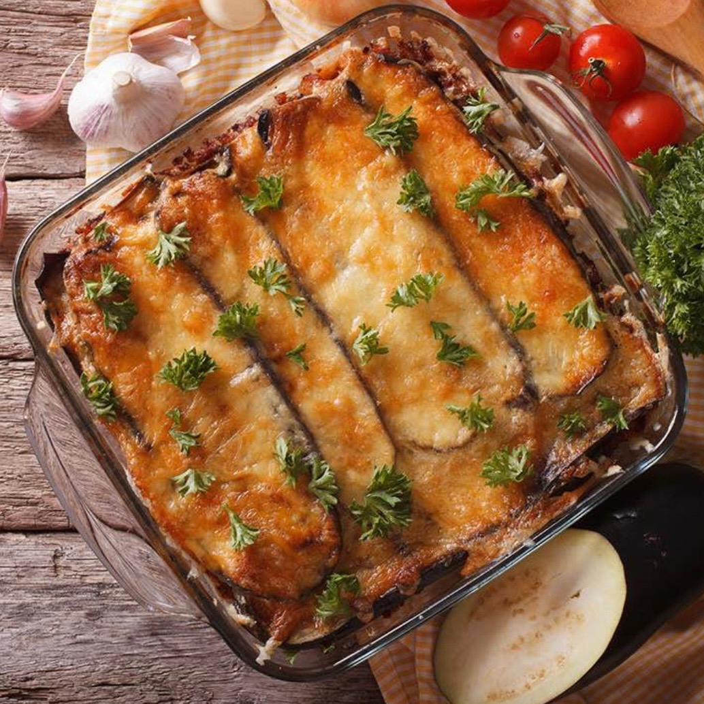

- 4 pers
- 20 min
2 aubergines
8 tomates
1 petit pot de tapenade noire
6 feuillles de basilic
10 cl d’huile
Nettoyer les aubergines et coupez-les dans le sens de la longueur sans les éplucher en fines tranches.
Préchauffez le four à 180 °C.
Faites dorer les tranches d’aubergine dans de l’huile chaude à feu vif 5 minutes de chaque côté. Égouttez-les sur une feuille de papier absorbant.
Lavez les tomates et coupez-les en fines lamelles .
Disposez les tranches d’aubergine sur une plaque allant au four.
À l’aide d’un couteau, tartinez chaque tranche avec un peu de tapenade puis disposez harmonieusement les rondelles de tomate.
Poivrez, salez et saupoudrez chaque aubergine avec un peu de basilic. Faites cuire 15 min au four.